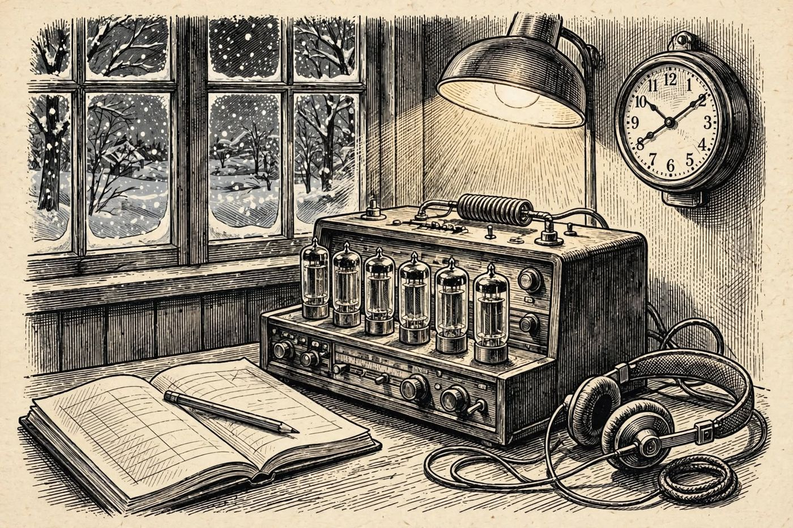

8 de diciembre
Las cinco versiones
Libro · págs. 34-37
Audio del día
Transcripción
«Aquí Rauch... La carretera hacia el paso sigue bloqueada por el alud. Mantenga a todos bajo control en el Altaneve, detective. Revise los papeles una y otra vez. Mentir sobre el papel es agotador y siempre deja una rendija. Compare las declaraciones con los registros de las cerraduras. Hay contradicciones evidentes... y una palabra suelta que nadie debería haber pronunciado todavía.»

Intenta resolverlo primero. Abre solo lo que necesites, en este orden.
1Pista sutil
Una afirmación no se considera refutada solo porque resulte sospechosa, sino cuando un anexo o prueba la contradice directamente (por ejemplo, el resultado de una partida que en realidad quedó a medias o los registros de cerraduras con las horas de apertura).
2Comprobación parcial
Las afirmaciones 3 y 6 sobre el ajedrez se contradicen entre sí y son desmontadas por la nota de Odile. La afirmación 8 de Valeria es desmentida por el testimonio de Mila.
3Pista fuerte
Los dos textos del ajedrez se contradicen entre sí (¿quién ganó, y con qué color?) y además la nota de Odile sobre el tablero demuestra que la partida no terminó. El registro de cerraduras, la nota de Mila y las horas de aperturas desmienten a Valeria y a Julian en tres frases. La palabra que solo aparece en un texto está en el de Ingrid.
4Solución oficialSpoiler si no lo has intentado
Afirmaciones contradichas:
3 (Cordelia dice que ganó Kessler) y 6 (Kessler dice que ganó Cordelia): Desmentidas por la nota de Odile (la partida quedó a medias).
8 (Valeria afirma haber tenido una charla tranquila): Desmentida por la nota de Mila (escuchó gritos).
10 (Valeria afirma no haber abierto su puerta): Desmentida por el registro (aperturas a las 21:52, 23:08 y 23:31).
12 (Julian afirma no haber salido de su cuarto): Desmentida por el registro de reentradas (22:03 y 22:33).
Para el desenlace de la historia, vuelve al libro: la sección de soluciones está al final.